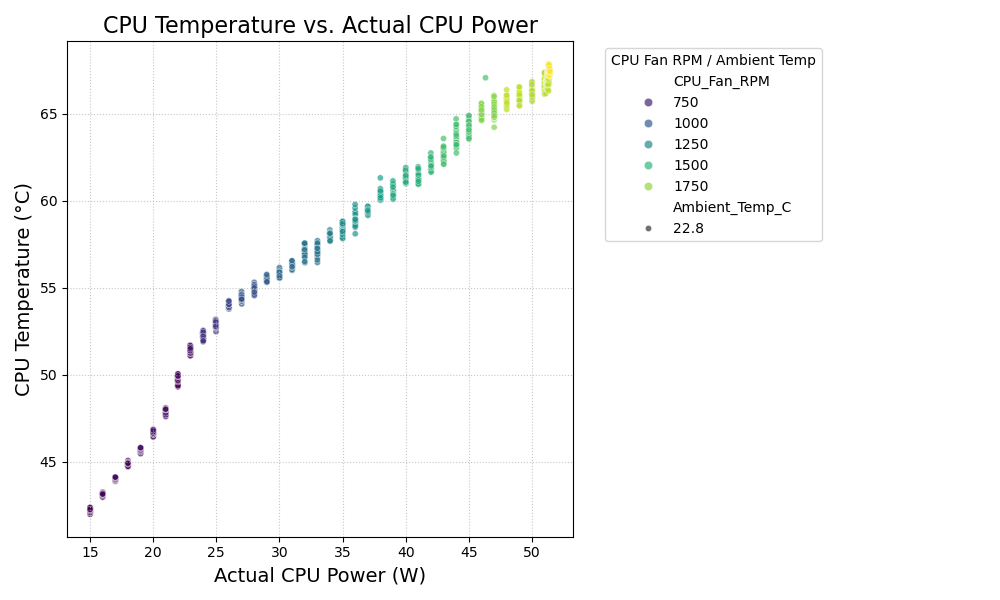

CPU Thermal Characteristics & Resistance Model
An Experimental Analysis
Slide Audio:
1. Objective
- To investigate the thermal characteristics of a CPU cooling solution under different Package Power Target (PPT) limits.
- To maintain a consistent computational load during tests.
- Key Outcome: Develop a thermal resistance model for the specific cooling solution.
Slide Audio:
2. System and Hardware
- CPU: AMD Ryzen 4650G
- 65W TDP (observed max ~51W in this experiment)
- Cooler: Noctua NH-L9a Fan & Heatsink

Slide Audio:
3. Configuration & Control
3.1. Orchestration
Experiment orchestrated using a BASH script: emu.sh.
3.2. Sensor Monitoring
- CPU Temperature & Power: Kernel module
ryzen_smuwithryzen_monitorutility. - CPU Fan RPM:
hwmoninterface.
3.3. CPU Power Control (PPT)
- Utility:
ryzen_monitor - Argument Format:
--set-ppt=VALUE - PPT Values Tested: 15W to 55W (1W increments).
3.4. CPU Load Generation
- Tool:
mprime(stress test) - Configuration: 6 threads (consistent across all PPT tests).
Slide Audio:
4. Test Protocol
Summary for each PPT value tested:
- Warm-up Duration: 30 seconds
- Measurement Duration: 30 seconds
- Cool-down Duration: 0 seconds (due to incremental PPT increases)
- Sampling Interval: 1 second
- Ambient Temperature (start): 22.8 °C (monitored, assumed constant for calculation per data point)
- Output:
cpu_cooling_data_controlled.csv
Slide Audio:
5. Procedure Summary
- Set CPU PPT limit (
ryzen_monitor). - Start
mprimeload (6 threads). - Wait for warm-up (30s).
- During measurement (30s), record at 1s intervals:
- CPU Temperature ($T_{case}$)
- CPU Power ($P_{cpu}$)
- CPU Fan RPM
- Ambient Temperature ($T_{ambient}$)
- Stop
mprime. - Repeat for the next PPT value (15W to 55W).
- Reset CPU PPT after all tests.
Slide Audio:
6. Thermal Resistance Model Development
6.1. Thermal Resistance ($R_{th}$) Calculation
For each data point, overall thermal resistance was calculated as:
Where:
- $T_{case}$: CPU temperature (°C)
- $T_{ambient}$: Intake air temperature (°C)
- $P_{cpu}$: Actual CPU power consumed (W)
Slide Audio:
6.2. Physics-Informed Model Structure
The relationship between thermal resistance and CPU fan RPM is modeled as:
Where:
- $R_{fixed}$: Airflow-independent thermal resistances (TIMs, IHS, cooler baseplate).
- $C / RPM^n$: Airflow-dependent convective thermal resistance (heatsink fins to air).
- $C$: Constant (heatsink geometry, material, air properties).
- $n$: Exponent (characterizes airflow-convection relationship, typically 0.5-0.8).
Slide Audio:
6.3. Model Fitting
Parameters ($R_{fixed}$, $C$, $n$) were determined by fitting the model to experimental (RPM, $R_{th}$) data using non-linear least squares regression (scipy.optimize.curve_fit).
Fitted Parameters (Approximate):
- $R_{fixed} \approx 0.0000 \, °C/W$
- $C \approx 12.0157$
- $n \approx 0.3467$
Slide Audio:
The general data processing and fitting steps included:
- Define parameter bounds (e.g., $R_{fixed} \ge 0$, $C \ge 0$, $0.1 \le n \le 1.5$).
- Perform Curve Fitting: Use non-linear least squares (e.g.,
scipy.optimize.curve_fit) to find optimal $R_{fixed}$, $C$, $n$. - Plot Results: Visualize experimental data against the fitted model (as shown above with
thermal_resistance_model_fit.png). - "Sweet Spot" Analysis (Optional): Analyze the derivative $dR_{th}/d(RPM)$ to find points of diminishing returns (results discussed in a later slide).
Supporting visualizations from the data analysis process:
(Detailed pseudo-code for the fitting process is available in exp.md)
Slide Audio:
Resulting Model Equation
Interpretation:
- $R_{fixed} \approx 0.0000 \, °C/W$: Suggests that airflow-dependent convective resistance is dominant for this cooler. Fixed resistances are minimal or absorbed into the convective term by the fitting process.
- $n \approx 0.3467$: Indicates the sensitivity of the cooler's performance to changes in fan speed. This value is somewhat lower than typical theoretical ranges (0.5-0.8), which might suggest flow characteristics specific to this heatsink/fan combination at the tested RPMs.
Slide Audio:
"Sweet Spot" Analysis
The derivative of the thermal resistance model, $dR_{th}/d(RPM)$, helps identify the "sweet spot" where increasing fan RPM yields diminishing returns in cooling performance.
- A potential "sweet spot" was identified around ~1900 RPM (based on derivative analysis in
fit.py). - Beyond this, improvements in $R_{th}$ per additional RPM become significantly smaller.
- This helps balance cooling performance with noise and fan longevity.
Conclusions & Key Takeaways
- Successfully characterized the thermal performance of the Noctua NH-L9a cooler on an AMD Ryzen 4650G.
- Developed a physics-informed model: $R_{th}(RPM) \approx 12.0157 / RPM^{0.3467}$.
- The model indicates that convective thermal resistance is the dominant factor for this cooler setup.
- The exponent $n \approx 0.35$ quantifies the fan speed's impact on cooling.
- "Sweet spot" analysis suggests optimal RPM ranges for balancing performance and noise/power.
Questions & Further Work
?
Potential Further Work:
- Investigate the impact of different Thermal Interface Materials (TIMs).
- Analyze the effect of chassis airflow and ambient temperature variations more broadly.
- Compare with other low-profile coolers.
- Explore the model's accuracy at extreme RPM ranges.